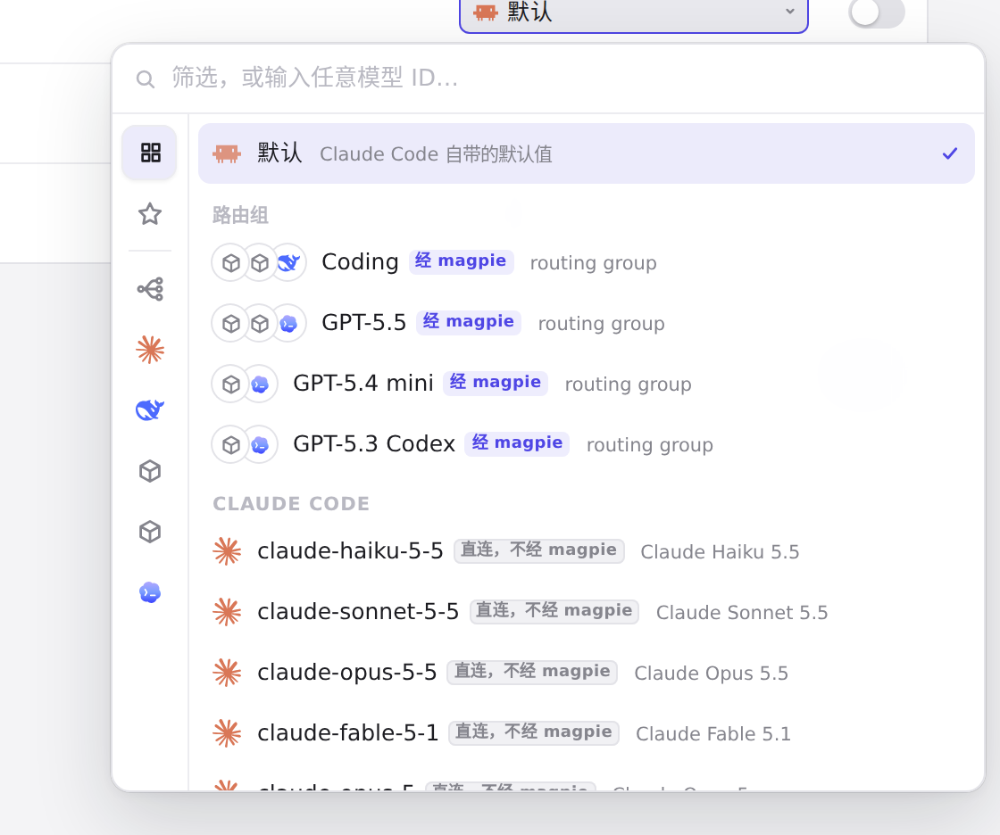
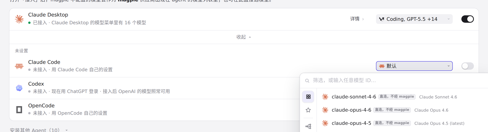
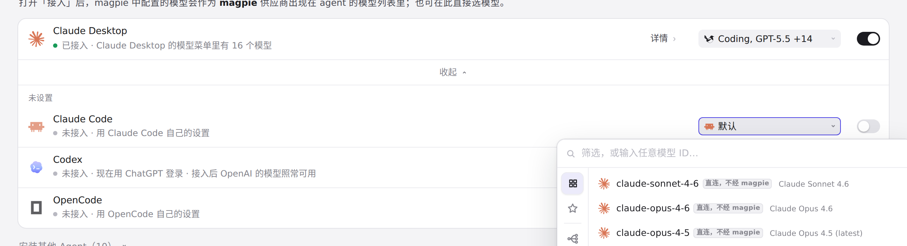
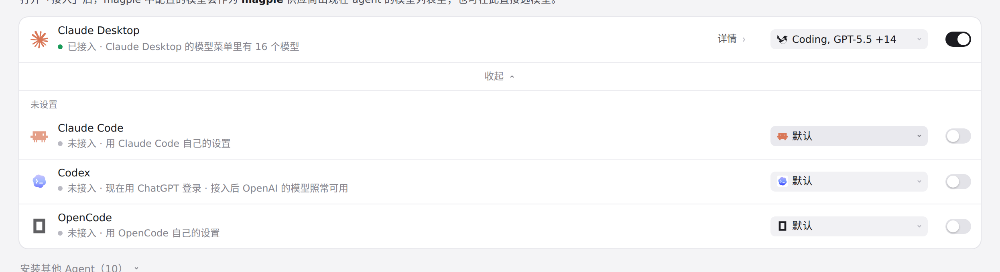

#1218 界面预览
commit 6b3ffe4 · 回到 PR · Agent 页里 Claude Code 的详情新增了「sign-in」字段：可选 magpie 的密钥（默认）或 claude.ai，选 claude.ai 时把 ANTHROPIC_AUTH_TOKEN 写空以保留 claude.ai 登录；该字段只在网关接收任意密钥（回环、镜像的 WSL）时提供，未经 magpie 跑起来的 Claude Code 不画这个方块。界面文案同时补上了这两个选项的中/英/日/德等翻译。
红线是鼠标走过的轨迹，红色圆环是一次点击；底部文字是这一步在做什么。空格暂停，← → 逐段查看。
 Claude Code 的 sign-in 字段 · Claude Code 未接入 magpie 时的 Agent 行
Claude Code 的 sign-in 字段 · Claude Code 未接入 magpie 时的 Agent 行

Claude Code 的 sign-in 字段 · 点开的模型列表

Claude Code 的 sign-in 字段 · 选好模型后 Claude Code 行里的字段

Claude Code 的 sign-in 字段 · 选好 magpie 的模型之后，Claude Code 这一行

Claude Code 的 sign-in 字段 · 选好模型后的 Claude Code 一行
 Claude Code 的 sign-in 字段 · 展开后的字段，找「sign-in」
Claude Code 的 sign-in 字段 · 展开后的字段，找「sign-in」